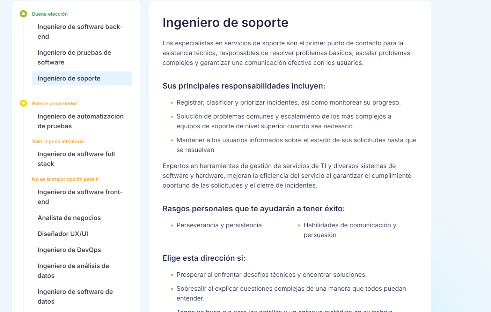

en esta clase aprendimos github

en esta clase aprendimos github

aprendi que exixten diferentes tipos de algoritmos
aprendi que tenemos un break de 15 minutos
El video da una charla de Andrew Ng sobre las redes neuronales y el aprendizaje profundo (deep learning). Ng explica los conceptos básicos de las redes neuronales, cómo se entrenan y cómo han evolucionado para convertirse en una parte esencial del campo de la inteligencia artificial. Utiliza ejemplos visuales para mostrar cómo las redes neuronales pueden aprender a reconocer patrones en los datos y cómo se ajustan los parámetros para mejorar la precisión de los modelos. Es una introducción accesible para quienes quieren entender los fundamentos del deep learning.
la imagen corresponde al punto 3 del parcial
la imagen corresponde al punto 4 del parcial
Resultado encuesta

SEGUNDA ENCUESTA
